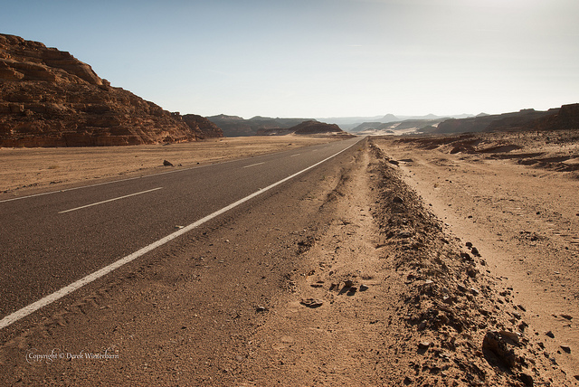

Tournez le bouton de gauche pour écouter les interviews
Appuyez sur les boutons du bas pour changer de chapitre
Chapitre 1 : Camps de torture, l’enfer sur Terre
“Ma cousine a été enlevée dans le Sinaï. Ses tortionnaires m’appelaient et ils me faisaient écouter pendant qu’on la violait, pendant qu’on la torturait”, laisse entendre la voix serrée de Meron Estefanos, journaliste à Erena, une Érythréenne qui a obtenu la nationalité suédoise. “Ils vous appellent toutes les cinq minutes, ça vous rend fou. Et ils vous disent que ça ne s’arrêtera que lorsque vous paierez la rançon.” 37 000 euros pour libérer sa cousine qui n’avait à l’époque que 24 ans. Mais après huit mois dans ce camp de torture, la jeune femme est sortie “à moitié paralysée”.
Dans leur fuite et parfois dans les camps de réfugiés protégés par l’ONU, les Érythréens se font kidnapper par milliers dans la Corne de l’Afrique et torturer pour rançon, jusqu’à ce que l’argent soit reçu. Sur leur téléphone portable, les victimes doivent appeler leurs proches pendant qu’elles se font violer, affamer, brûler par du plastique fondant, électrocuter, ligoter. Meron, qui vit et travaille depuis une pièce quasi vide à Stockholm, reçoit ces appels et les retransmet sur radio Erena, seul média érythréen indépendant diffusé à l’intérieur du pays par satellite.
“Le premier appel que j’ai reçu, c’était un homme qui s’était fait enlever avec son frère”, s’empresse Meron. C’était en 2010, et c’était la première fois qu’elle entendait parler de ce trafic humain virant au sadisme. “Leur histoire m’avait tellement touchée que j’ai donné mon numéro de téléphone à l’antenne pour que d’autres victimes puissent me contacter. Depuis, ça n’a pas cessé.” Meron passe ses journées à répondre à ces appels, à contacter les proches et les trafiquants, à regrouper de l’argent, à démarcher les ONG et les institutions internationales, ou à enquêter sur le terrain pour retrouver des personnes disparues.
40 000 Érythréens auraient été kidnappés dans le Sinaï; 10 000 n’en seraient pas revenus
Elle estime qu’entre 2008, date de début du trafic dans le désert égyptien, et 2014, quand l’armée égyptienne a bombardé cette zone emprise de groupes terroristes, 40 000 Érythréens auraient été kidnappés dans le Sinaï; 10 000 n’en seraient pas revenus. Le trafic s’est déplacé dans les environs d’Alexandrie, en Libye, au Tchad, et au Soudan, il s’est transformé mais “il a empiré sans l’ombre d’un doute”, observe Cécile Allegra, co-réalisatrice du documentaire Voyage en barbarie qui retrace les histoires des maisons de torture du Sinaï, Prix Albert Londres 2015.
 Le désert du Sinaï en Egypte, Flickr/Derek Winterburn
“On ne peut pas dire aujourd’hui qu'une seule des personnes qui passent la mer méditerranée au départ de la Libye n’ait pas été torturée ou violée. Non, je n’en connais pas”, signale-t-elle, alors qu’elle donne régulièrement des coups de main dans les camps de réfugiés près de Rome.
"À l’extérieur, personne ne nous croira”
“Si une femme fait la traversée du Soudan en Libye, elle sera violée au moins trois fois”, atteste Meron, inquiète de la situation qui ne fait qu’empirer avec la présence de Daech en Libye, responsables eux-aussi d’enlèvements et d’exécutions de réfugiés érythréens chrétiens. “Certains seront kidnappés et emmenés en camp de torture trois fois, d’autres, plus chanceux, deux fois.” Près de 500 000 personnes passent par la Libye chaque année : toutes pourraient être concernées.
De quelques milliers de dollars en 2008, la rançon pour ces réfugiés a grimpé en peu de temps pour atteindre en moyenne entre 30 000 et 50 000 dollars par tête, parfois plus. “J’en connais qui ont payé 60 000 dollars pour libérer une seule personne”, indique la journaliste et activiste érythréenne. Une somme faramineuse pour les familles, qui ne touchent que 38$ de compensation contre leur service national. Pour trouver cet argent, les proches vont supplier les voisins, les cousins éloignés, toute connaissance qui peut épargner quelques dollars. “Beaucoup de ces victimes ont une grande dette pour rembourser leur famille”, révèle Klara Smiths, l’une des auteurs d’un rapport publié fin mars sur l’après Sinaï, Human Trafficking and Trauma in the Digital Era: The Ongoing Tragedy of the Trade in Refugees from Eritrea , qui se traduit par “Trafic humain et traumatisme à l’ère digitale : la tragédie persistante du trafic de réfugiés érythréens (Langaa RPCIG, 2017). Il arrive à Meron de payer elle-même cette rançon.
“C’est la seule manière : soit tu payes, soit ils meurent. J’étais épuisée : les personnes à qui je parlais tous les jours commençaient à mourir dans ces camps”, dit-elle entre deux sanglots. “Je suis allée à l’Union Européenne, au Département d’Etat américain, aux ONG, partout, mais rien ne se passait. Personne ne s’en soucie.” À bout, elle a commencé à chercher l’argent pour sauver ces personnes “qui ne font qu’attendre de mourir”.
“Je me souviens d’une petite fille de huit ans, elle avait été kidnappée avec ses parents”, raconte-t-elle, la voix tremblante. “On la forçait à regarder sa mère se faire violer, son père se faire torturer. Elle voyait tellement de personnes mourir.”
“Elle-même a été violée. Je lui lisais des contes au téléphone, pour qu’elle ait l’impression d’être l’enfant qu’elle aurait dû être.” En moins de 48 heures, Meron a pu récolter le double de l’argent demandé, de quoi libérer en tout sept otages.
Avec les nouveaux réseaux de trafiquants, ce prix a baissé, aux alentours de 9 000 dollars répartis entre plusieurs trafiquants selon Klara Smiths. Mais le mode opératoire est le même : les réfugiés sont vendus et revendus d’un trafiquant à l’autre, gardés par groupe de 10 ou 20 dans des entrepôts où ils sont enchaînés, affamés et tués s’ils ne payent pas.
À la question de savoir pourquoi la torture est d’une telle violence, Cécile Allegra avance trois réponses. D’abord, un raisonnement économique : “Les tortionnaires négocient des groupes de détenus, et tous ne mettront pas le même temps à payer. Ils torturent pour les inciter à aller plus vite”, explique-t-elle. Deuxième raison, la garde est confiée à des jeunes hommes locaux, de 17 ou 18 ans, payés à la tête lorsque l’otage leur est confié. “S’ils gardent les 20 personnes qu’ils ont sous leur contrôle pendant un an et qu’aucune d’entre eux ne payent, alors il ne touchent rien d’autre que ce qu’on leur a donné le premier jour,” continue la réalisatrice. “Et cela nourrit un sadisme qui va crescendo au fil des mois, on bascule parce que la personne en face de nous n’est plus qu’un tas de chair.” À la sortie des camps les cicatrices mettent des années à disparaître; certaines victimes seront marquées à vie. Des “zébrures” dans le dos à cause de brûlures profondes, une main amputée par des garrots trop serrés, trop longtemps : d’un corps à l’autre, les blessures se ressemblent.
“Tous ces jeunes qui nous ont parlé nous disaient : ‘À l’extérieur, on ne nous croira pas, on ne nous comprendra pas. Ce n’est pas explicable ce qu’on a vécu’”, rapporte Cécile Allegra. “Et toutes ces paroles je les aies déjà lues il y a vingt ans dans un livre qui s’appelle Si c’est un homme de Primo Levi (1947) et qui racontait le sort des rescapés de camps de concentration nazis.”
« Quand tu dépenses de l’argent, tu te sens coupable parce que tu sais que ça pourrait changer la vie de quelqu’un »
Dans sa chambre à Stockholm, Meron Estefanos s’enferme au son de ces cris d’otages suppliciés ; elle s’isole dans ces histoires de vies brisées. “J’ai perdu tous mes amis”, regrette-t-elle : “Ces histoires, ça te perturbe, ça te change complètement. Tout le reste, ça devient risible.” Meron ne souffle jamais, ses journées, ses nuits sont toutes absorbées par ce sujet, et c’est sûrement ça qui la sauve de la dépression. “Tu te sens coupable quand tu manges parce que ces personnes à qui tu parles n’ont pas mangé depuis plusieurs jours. Quand tu ris, quand tu dépenses de l’argent, tu te sens coupable parce que tu sais que ça pourrait changer la vie de quelqu’un”, réplique-t-elle. Chaque Noël, des dizaine de victimes de camps de torture viennent la visiter en Suède; elle reste en contact avec tous les otages libérés.
Son collègue parisien, Amanuel Ghirmay, a repéré et nommé 105 trafiquants d’origine érythréenne qui opèrent en Libye lors d’un déplacement en octobre dernier : c’est bien plus que les 15 trafiquants connus dans le Sinaï, surtout que d’autres nationalités (nigériens, centrafricains, soudanais, egyptiens…) participent en masse à ces réseaux.
Le gouvernement érythréen est le premier impliqué dans ce trafic : dans les passages de frontière mais aussi dans les maisons de torture. En 2012, un rapport de l’ONU attestait des liens du général Teklai Kifle “Menjus”, en charge de la zone ouest de l’Erythrée, avec le réseau dans le Sinaï; depuis, les dénonciations n’ont cessé de se multiplier. L’argent transféré en mains propres ou par des système de paiement comme Western Union et MoneyGram passe souvent par Asmara, la capitale érythréenne. “Et dans un pays comme l’Erythrée, rien ne peut se passer sans l’aval du président”, rappelle Klara Smiths.
D’autres autorités sont impliquées notamment au Soudan et en Egypte : gardes-frontières, police, voire au-delà, mais peu ont déjà été nommés. En 2013, Meron a monté un dossier contre deux résidents européens impliqués aussi dans ce trafic - la diaspora érythréenne souvent pro-gouvernement est puissante à l’étranger. “Mais la solution, ce n’est pas de les poursuivre en justice,” se désole Meron : “Si on arrête un tel trafiquant, des milliers d’autres vont prendre sa place. Le problème, c’est la dictature érythréenne.”